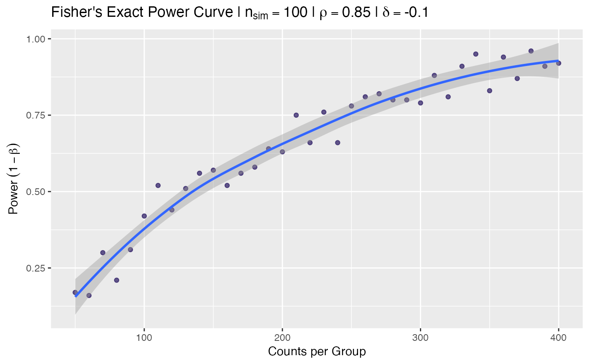

fisher_power_curve.RdGenerates data for a power curve where power is empirically estimated over a range of sample size values.
S3 print method for fisher_power_curve objects.
S3 plot method for fisher_power_curve objects.
integer(n). A sequence of sample sizes per group
to evaluate the corresponding power.
double(1). Binomial probability of group 1 (the base group).
double(1) in (-1, 1). The difference from p
of group 2. Can be negative.
integer(1). Number of simulations to perform
in estimating power, (\(1 - \beta\)).
Arguments passed to fisher_power().
A fisher_power_curve class object.
tbl <- fisher_power_curve(seq(50, 400, 10), nsim = 100L)
tbl
#> ── Fisher's Exact Power Curve Simulation ───────────────────────────────────────
#> • Sim table 36 x 2
#> • Sims per calculation 100
#> • p 0.85
#> • delta -0.1
#> • Varying n
#> • Sequence `n` 50, 60, 70, 80, 90, 100, 110, 120, 130, 140, 150, 160, 170, 180, 190, 200, 210, 220, 230, 240, 250, 260, 270, 280, 290, 300, 310, 320, 330, 340, 350, 360, 370, 380, 390, 400
#> ════════════════════════════════════════════════════════════════════════════════
plot(tbl)
